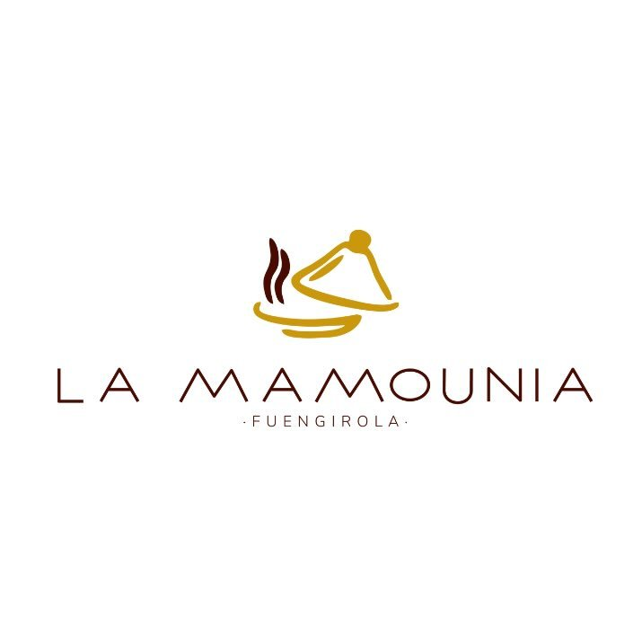
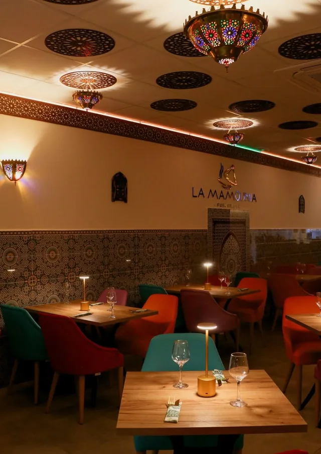
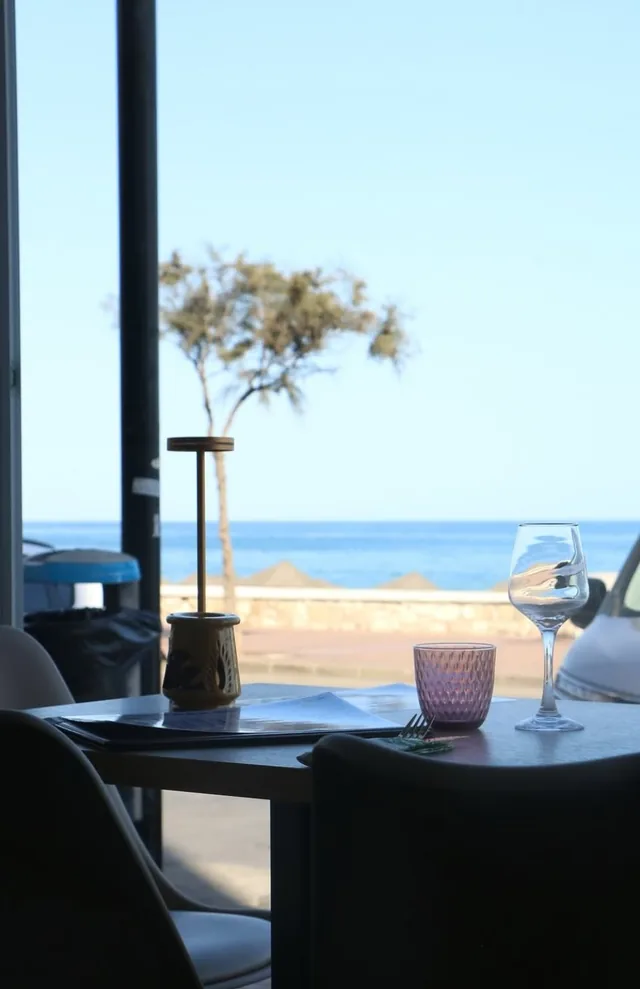

El tiempo de la cocina.
La tanjia de ternera y los tajines conviven con el cuscús y las pastillas. Un recorrido por los platos que dan forma a la carta marroquí.

Reservar mesa ↗LA MAMOUNIA, A FUEGO LENTO
Marruecos y Líbano se encuentran en el paseo marítimo de Fuengirola.

EL LUGAR
El dibujo de los mosaicos, los tonos turquesa de las sillas, la cerámica y los cubiertos dorados. La Mamounia empieza a contarse antes de que llegue el primer plato.
Una cocina de raíces marroquíes y libanesas que reúne tajines, cuscús, mezze y parrilla. El hilo conductor es la mesa: empezar con algo para compartir y dejar sitio para la sobremesa.
La tanjia de ternera y los tajines conviven con el cuscús y las pastillas. Un recorrido por los platos que dan forma a la carta marroquí.
Hummus, falafel y mezze: una invitación a poner varios platos en el centro y hacer de la elección parte de la conversación.
La repostería y el té marroquí abren otro capítulo. El pequeño ritual de seguir en la mesa un poco más.

ATARDECER EN LA MAMOUNIA
Estamos en el número 5 del Paseo Marítimo Rey de España. La terraza permite llevar la conversación al aire libre, junto al paseo.
Google incluye música en directo entre los servicios, y el restaurante muestra música y baile en su publicación del 3 de mayo de 2026. Consulta las próximas fechas y el programa al reservar.
Preparar tu visita ↗TAMBIÉN EN TU CELEBRACIÓN
El restaurante prepara platos marroquíes por encargo para reuniones familiares, cumpleaños y eventos de empresa. En Instagram puedes ver un pedido de cuscús para 20 personas y consultar tu idea por mensaje directo.
Ver la publicación del restaurante ↗TE ESPERAMOS EN FUENGIROLA